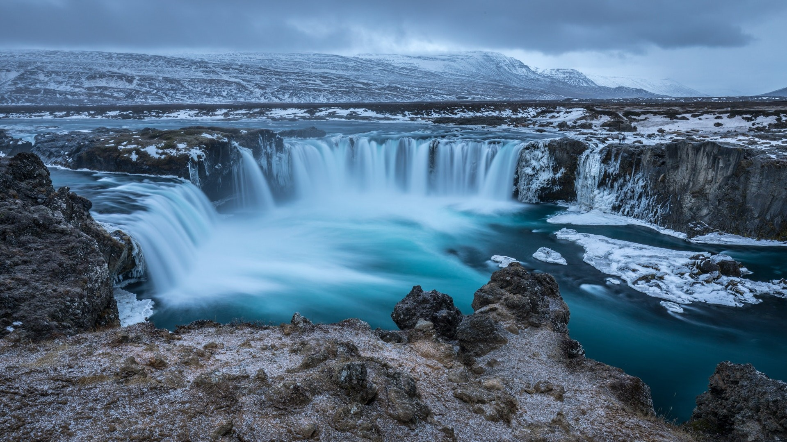
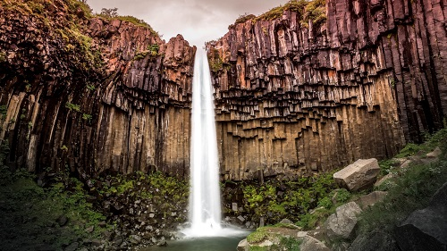
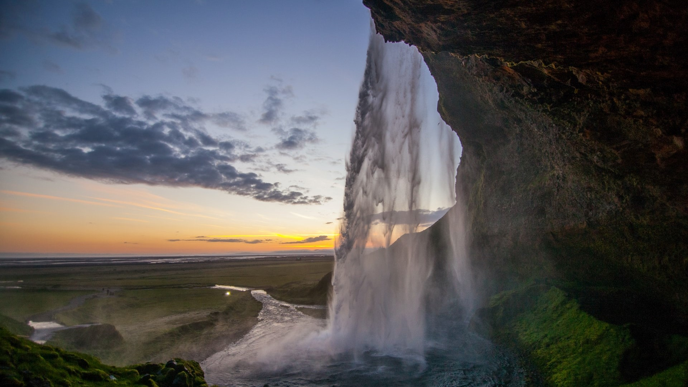
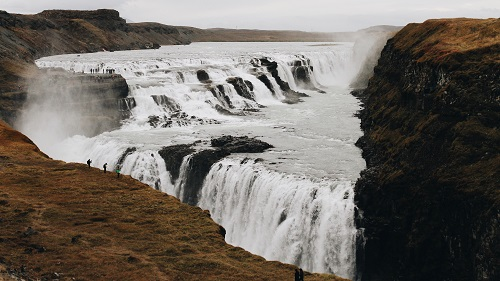
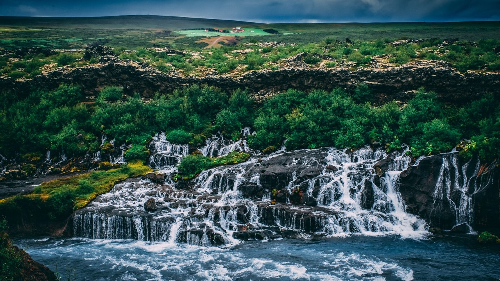

GOÐAFOSS
Located in the north-east part of Iceland between Akureyri and Lake Mývatn. Located in the north-east part of Iceland between Akureyri and Lake Mývatn. Located in the north-east part of Iceland between Akureyri and Lake Mývatn.

SKOGAFOSS
Located in the north-east part of Iceland between Akureyri and Lake Mývatn.

SVARTIFOSS
Located in the north-east part of Iceland between Akureyri and Lake Mývatn.

SELJALANDSFOSS
Located in the north-east part of Iceland between Akureyri and Lake Mývatn.

GULLFOSS
Located in the north-east part of Iceland between Akureyri and Lake Mývatn.

HRAUNFOSSAR
Located in the north-east part of Iceland between Akureyri and Lake Mývatn.